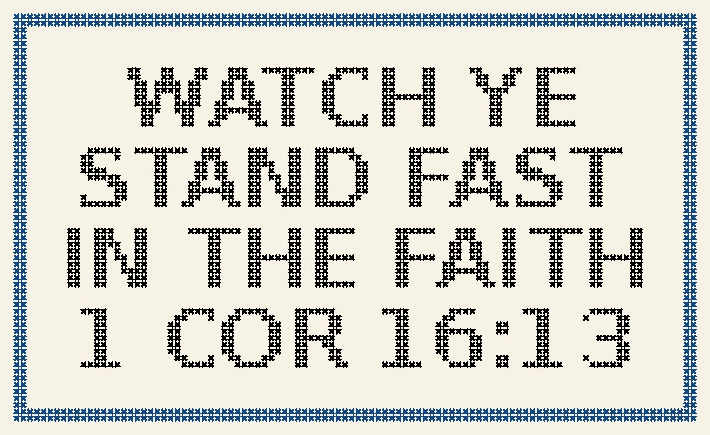

Home › Activities › Cross-stitch
Free cross-stitch pattern"Watch Ye, Stand Fast" Cross-Stitch Pattern
A bold KJV 1 Corinthians 16:13 cross-stitch chart for a man's office, garage or study. Full stitches only.
⬇ Download the PDF chart colour chart + symbol chart + floss key · free
102 × 61stitches
7.3 × 4.4 inon 14-count Aida
2DMC colours
Beginnerfull stitches only
You'll need
- ■ DMC 310 Black
- ■ DMC 797 Royal Blue
- 14-count Aida (or 11-count for a bigger piece)
- Size 24 tapestry needle and a hoop
How to stitch it
- Cut your Aida about 3 inches bigger than the design on every side and fold it in quarters to find the centre.
- Start at the centre arrows on the chart and work full cross stitches with 2 strands.
- Finish one colour block at a time, then press from the back and frame.

FORGED: Daily Bible for Men
FORGED is a 90-day Bible plan for men: one practical challenge, one passage in plain English and quiet time each day.
Get it free on the App Store